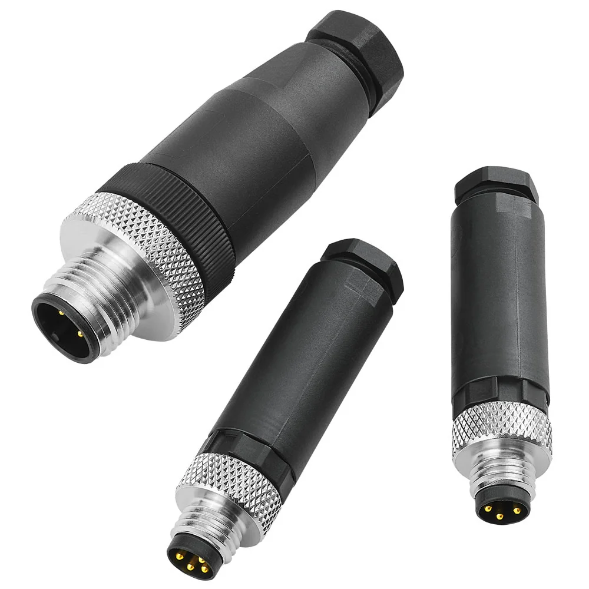
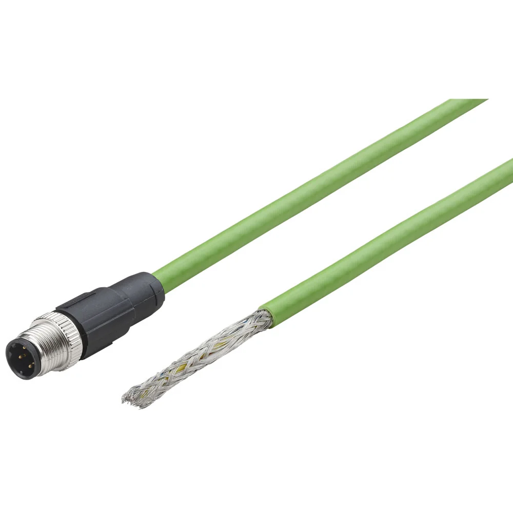

Datasheet (PDF)
en_3_6_001_IO_Link_NC_series.pdf
Tải tài liệuWireable plug, 4 pin, M8 x 1, 60 V DC

NC-084MS-WIRE0A0 thuộc Cables & Connectors Norgren series NC series, đi kèm khoảng 3 tài liệu kỹ thuật. Các mã cáp dễ nhầm về số chân, kiểu mã hóa (A/B/D-coded) và chiều dài, nên cần xem datasheet hoặc gửi ảnh đầu nối. Thông số: Operating Temperature: -25 ... 85 °C, -13 ... 185 °F | Body: Polyamide (PA) | Country of Origin: Germany. Gửi yêu cầu sơ đồ chân và chiều dài để chúng tôi đối chiếu và xác nhận đúng mã trước khi báo giá.
Các thông số phục vụ nhận diện ban đầu. Khi đặt hàng, vui lòng gửi yêu cầu để xác nhận lại cấu hình, chứng từ và điều kiện giao hàng.
Tài liệu hiển thị ở mức tham khảo để khách hàng kiểm tra nhanh. Với yêu cầu mua hàng, đội kỹ thuật sẽ xác nhận lại tài liệu phù hợp theo mã và cấu hình thực tế.
en_3_6_001_IO_Link_NC_series.pdf
Tải tài liệuz10335BR_IMI IO-Link Masters and IO Modules_EN_LR.pdf
Tải tài liệuncseries-software-all.zip
Tải tài liệuDanh sách tham khảo giúp định hướng phụ kiện, cáp, fitting, coil, mountings hoặc mã tương tự. Khi báo giá, thông tin sẽ được kiểm tra lại theo cụm lắp thực tế.
Gửi ảnh cụm lắp hoặc BOM để đội kỹ thuật kiểm tra phụ kiện tương thích.

Industrial ethernet cable, 5 m, 4 pin, open end, M12 x 1, 250 V AC/DC

Valve connector, 0.6 m, 3 pin, DIN EN 175301‑803 Form B, 24 V AC/DC, with indicator

Valve connector, 2 m, 3 pin, DIN EN 175301‑803 Form A, 24 V AC/DC, with indicator

Industrial ethernet cable, 0.5 m, 4 pin, M12 x 1, 50 V AC / 60 V DC

Valve connector, 2 m, 3 pin, DIN EN 175301‑803 Form C, 24 V AC/DC, with indicator

Valve connector, 2 m, 3 pin, DIN EN 175301‑803 Form B, 24 V AC/DC, with indicator
NC-084MS-WIRE0A0 thuộc nhóm Cables & Connectors. Trang này dùng để đối chiếu mô tả, thông số kỹ thuật, tài liệu và phụ kiện liên quan trước khi gửi yêu cầu báo giá.
Bạn gửi mã thiết bị cần đấu và yêu cầu kết nối (số chân, M8/M12, kiểu mã hóa, chiều dài). Chúng tôi đối chiếu datasheet để đề xuất cáp – đầu nối tương thích. Đấu đúng số chân và kiểu mã hóa giúp tín hiệu ổn định. Nếu lắp trong môi trường dầu hoặc kéo gập, chúng tôi tư vấn loại vỏ cáp phù hợp.
Bạn gửi part number cần tra; chúng tôi đối chiếu và cung cấp các thông số kỹ thuật chính cùng tài liệu liên quan đến mã đó. Nếu một mã có nhiều tài liệu (datasheet, hướng dẫn lắp, bản vẽ), chúng tôi nêu rõ từng loại. Việc này giúp bạn xác minh cấu hình trước khi đưa vào hồ sơ mua hoặc lắp đặt.
Hãy đối chiếu part number với datasheet để kiểm tra cỡ cổng, kiểu điều khiển và thông số làm việc khớp với vị trí lắp hiện tại. Nếu thiết bị đã thay đổi qua nhiều lần bảo trì, gửi thêm ảnh và mô tả ứng dụng. Chúng tôi xác minh cấu hình trước khi báo giá để tránh đặt nhầm biến thể.
Được. Bạn gửi hai part number cần so sánh; chúng tôi đối chiếu các thông số chính từ datasheet như cổng, dải làm việc, điều khiển và phụ kiện liên quan, rồi nêu điểm khác biệt. Trên cơ sở so sánh đó, bạn chọn biến thể phù hợp ứng dụng trước khi yêu cầu báo giá.
Gửi kiểu đầu nối & số chân để đối chiếu sơ đồ và báo giá. Gửi part number, số lượng, ảnh tem hoặc vị trí lắp để đối chiếu cấu hình trước khi báo giá.